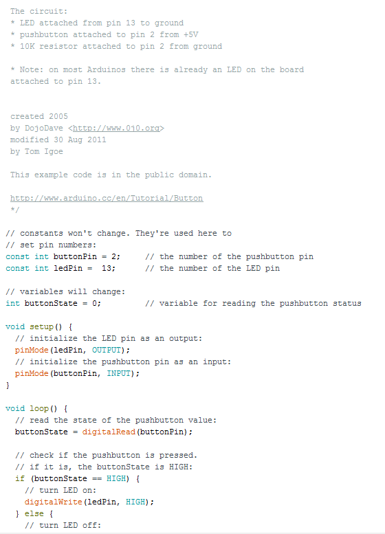

For these couple of weeks we have been learning about circuits. We used the arduino uno, which is the most simple circuit board. We also learned about some commands for coding the arduino such as digitalRead() or digitalWrite() which code for the LED lights that we used. We spent a couple weeks playing around with the circuits by creating light shows and setting up buttons. This was a very interesting experience for me since I have never tinkered with circuits before, but this could be useful in life for my major, or possibly even a new product that no one has ever thought of. Overall we learned how to code the for the LED lights usig all sorts of commands.